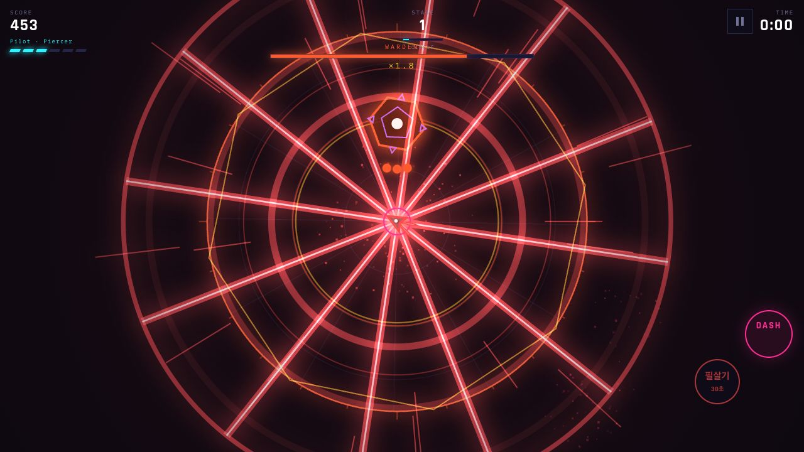
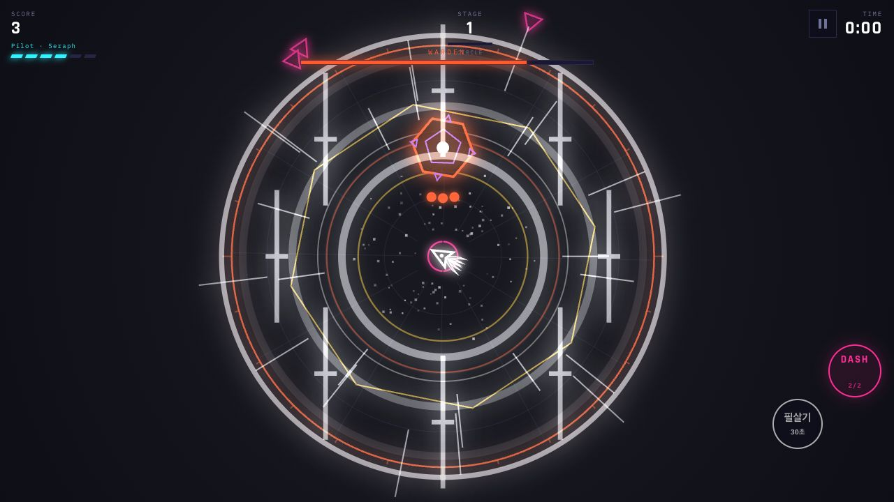
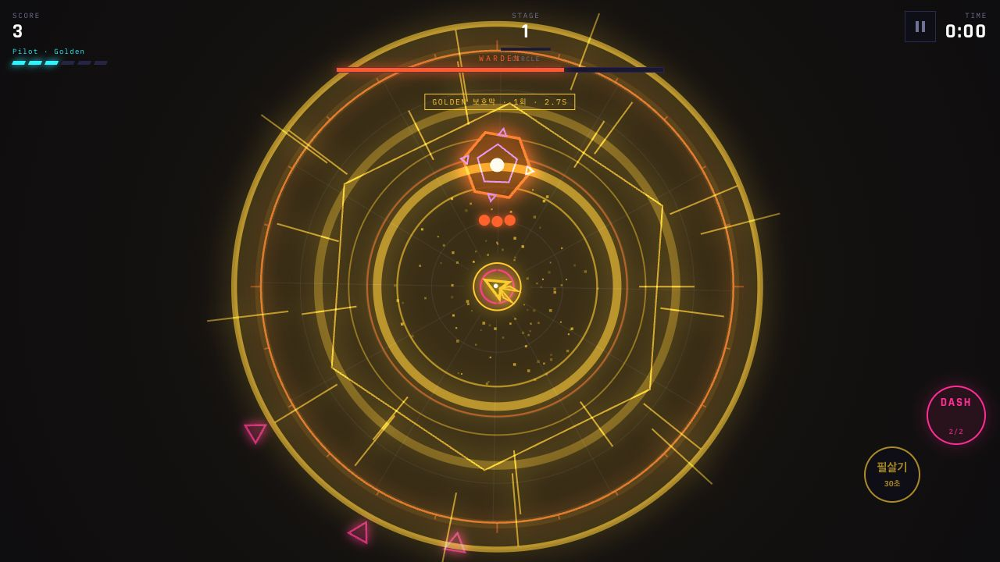

NeonDash
대시와 필살기로 적의 공격을 피하고 보스를 상대하는 비행 슈팅 게임.



기체 4종
기체마다 필살기, 대시와 이동 반응이 다릅니다.
내 기록 TOP 10
점수·기체·부품은 기기에 저장합니다. 로그인은 필요하지 않습니다.
선택형 광고 부활
무료 부활 1회 이후 광고 시청으로 최대 3회 추가 부활할 수 있습니다.
대시와 필살기로 적의 공격을 피하고 보스를 상대하는 비행 슈팅 게임.



기체마다 필살기, 대시와 이동 반응이 다릅니다.
점수·기체·부품은 기기에 저장합니다. 로그인은 필요하지 않습니다.
무료 부활 1회 이후 광고 시청으로 최대 3회 추가 부활할 수 있습니다.